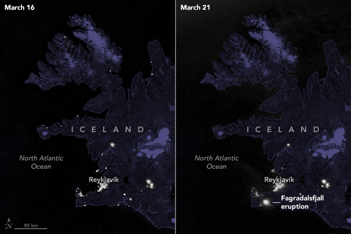
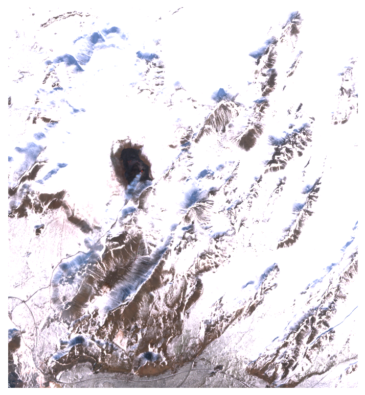

The Fagradalsfjall volcano is located on the Reykjanes Peninsula (RP) in Iceland. The highest point in the volcanic system reaches ~390 m.a.s.l.
This eruption started on 19 March 2021 when an eruptive fissure appeared in the Geldingadalir valley, and lasted for a period of 6 months, ending on 19 September 2021.

"Volcanic Eruption Lights Up Iceland"
From https://earthobservatory.nasa.gov/images/148079/volcanic-eruption-lights-up-iceland
The lava flow paths were extracted from Sentinel-1 data using Object-based Image Analysis. Different dates throughout the eruption were selected for the extraction process.
The first phase of the eruption initiated with the opening of a 180 meters length fissure that rapidly became two different vents with fountaining activity filling the Geldingadallir valley.
Check the area covered by this phase in the layers panel using "Lava outline 31/03/2021"

Sentinel-2 image of the area as for 30/03/2021
The second phase started on 05 April 2021 with the aperture of five additional vents and the active vent migration, extending the eruption to the northeast. The activity included bubble-bursting and outpouring of lava in variable amounts alternated between vents.
Check the area covered by this phase in the layers panel using "Lava outline 12/04/2021"
 Source images from www.ruv.is
Source images from www.ruv.is
Source images from www.ruv.is
The third phase began from 27 April 2021 and was characterized by an increase in the lava time-average discharge rate with lava fountains along with different intensity and periodicity from a single vent, which remained active for the rest of the eruption.
Check the area covered by this phase in the layers panel using "Lava outline 18/05/2021"
Intermittent volcanic activity from 28 June 2021 marked the beginning of the fourth phase exposing non-continuous fountaining and episodes of strong lava emplacement alternated with repose intervals.
Check the area covered by this phase in the layers panel using "Lava outline 29/07/2021"
 Planet imagery as for 29/07/2021
Planet imagery as for 29/07/2021
Planet imagery as for 29/07/2021
The phase 5 was established on 02 September 2021, starting with week-long pause in the volcanic activity followed by week-long lava outpouring episode. By the end of the eruption on 18 September 2021, the estimated area covered by the lava flow was 4.8 km² (Pedersen et al., 2022)
Check the area covered by this phase in the layers panel using "Lava outline 04/10/2021"